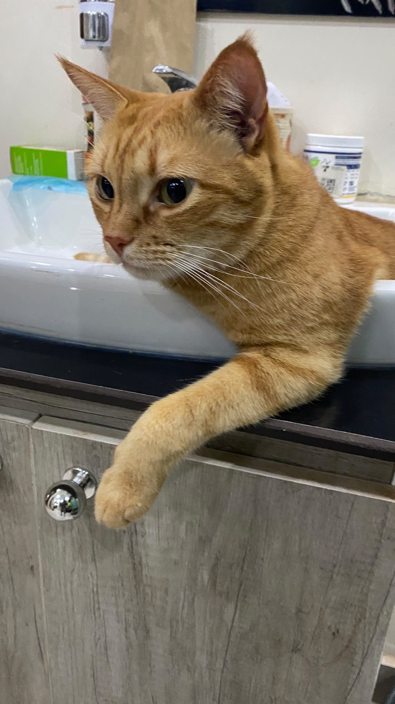
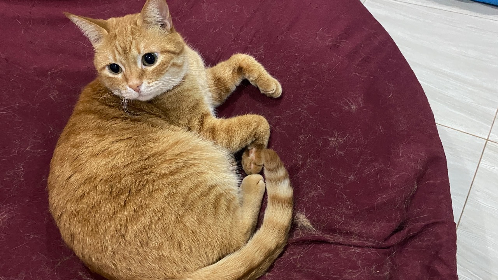
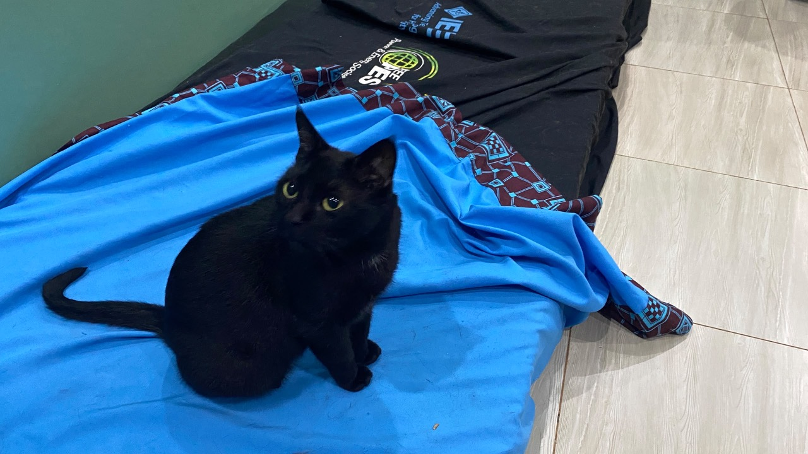

| NAMES | COLORS |
|---|---|
| king | orange |
| Rugwiro | Orage |
| Buka | Black |
our house we have three cats,among them, two have orange color and another one has a black color, the orange ones are KING and RUGWIRO and the black one is BUKA,
please check out down below their pictures and their differences in character.

KING is an friendly beautiful orange cat who always like to play, almost wish to go out
for a sunbathing and his fast than others when it comes to catch the thrown treat.

RUGWIRO is an friendly beautiful orange cat always love attention by sleeping on my laps
as his comfort zone and likes to play with his brothers especially KING

BUKA is a friendly beautiful black who use to stay quite and alone on his comfort zone,
always get exited when he met someone whom he is familiar with, by jumping and tap his head
on his/her hand or rubbing on his/her feet just as a welcoming sign, among others
he is the one who used to eat a lot than others thats why he weighs a lot than others.
NOTICE:Our cats are indoors for father information about indoor cats chek this website